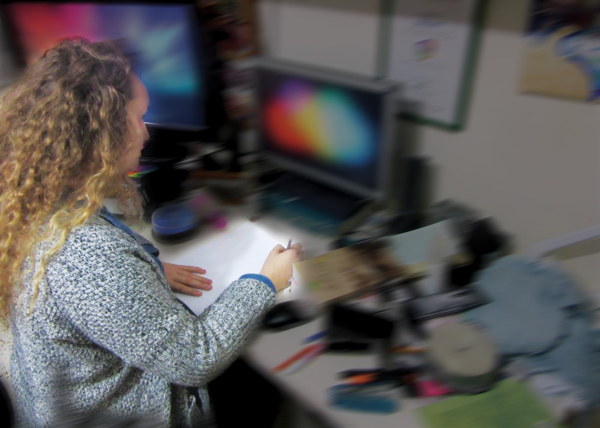

במסגרת פרוייקט סיום בקורס תקשורת חזותית, יצרנו חידוש ליצירה קיימת של הציירה עליזה גוטמן.
ביצירה החדשה רצינו להעביר את התחושה בה מרגיש אדם עם בעיות קשב וריכוז. את ההמולה שיש סביבו כאשר הוא צריך להתרכז בדבר אחד.
פרטים נוספים תוכלו לקבל בסרטון הנמצא בעמוד זה
